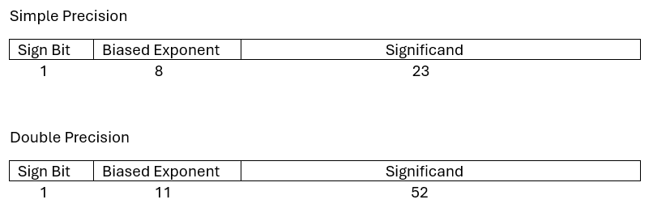
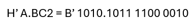

Index
What is IEEE?
IEEE is the acronym of Institute of Electrical and Electronics Engineers.
They are a global entity responsible for drafting major and important standards. Specifically, many computing science standards are written by them.
What is IEEE 754?
The IEEE 754 is a standard that defines the arithmetic, representation and more rules of floating-point numbers.
In this site we will focus on the rules to convert a fractional number from classic notation into a binary sequence that a computer can store and read.
This conversion is not easy: a short number in decimal base can have a massive number of fractional digits in binary notation.
That situation requires a smart way to do the conversion that combines two things:
1. A short sequence of numbers to avoid filling too much disk space.
2. Maintaining a high accuracy of the original number.
This standard provides us two different precisions: one of 32 bits (simple precision) and another of 64 bits (double precision).
How to make this conversion?
From here on, we will introduce an informal explanation of the conversion. It does not cover all the standard details, but it is very illustrative to understand how it works.
Sections of an IEEE 754 number
Sign bit
The first bit appears in both precisions. It is very simple to understand: if this bit is '0', the represented number is positive, and if it is '1', the number is negative.
Biased exponent
This section has 8 bits in simple precision and 11 bits in double precision. This group of bits tells us how many times the decimal point was shifted and in which direction.
It is very common to name this section only "exponent".
We will cover more about this in the next section.
Significand
This is a group of 23 bits in simple precision and 52 bits in double precision.
It contains the basic information of the original number.
We will cover more in the next section as well.
Notes about the notation
Before the publication of this standard, floating-point numbers already existed and the community used the word "characteristic" to refer to the "biased exponent" and "mantissa" to refer to the "significand".
Although IEEE does not use those words, they appear in many websites and books, that's why you should know and not confuse them.
Instructions
Step 1: Convert the number to the binary base
The first step is to calculate the representation of the number in binary. If your original number is in a numerical base that is a power of 2 (e.g., octal, hexadecimal...), you can convert it digit by digit.
Step 2: Shift the point
Once you have the binary representation, you should shift your point to a position where you only have one '1' at the left and the rest of the number on the right side.
The first bit after your point is the first bit of your significand. Now, you should take the correct amount of bits after that bit (23 or 52, depending on precision). They all are the significand.
If your binary number has more bits than you need, you should perform rounding (it will be explained later).
Note that by shifting the point, you have altered the number, so you must balance it with a multiplication. How? Simple, multiply the number by 2 to the power of the times you shifted the point.
If the shifting was to the left, the exponent will be positive, otherwise, it will be negative. This number is the exponent.
Step 3: Add the bias
At this point, we have the significand and the exponent. However, we need the biased exponent. To get it, you only have to add a bias, 127 in case of simple precision and 1023 in case of double.
The reason is to avoid negative exponents.
Make sure you are using the correct number of bits.
Step 4: Mix them all
We are finishing the process. We have the significand and the biased exponent. Now, we only need the sign bit, which is the easiest to determine. If your number is positive: '0', otherwise: '1'.
Then, arrange all the parts in the correct order, and that's it. Since your IEEE754 number is in binary base, you can easily convert it to any other numerical base that is a power of 2. Since you will have 32 or 64 bits, it is very common to group the bits in sets of 4 and to convert them to hexadecimal (base 16 = 2^4).

Rounding methods
When we extract our significand but there are more bits that do not fit, we need to perform rounding.
roundTiesToEven
The most used method is roundTiesToEven, which consists of adding 1 to the significand if ONE of the two following conditions are met:
1- The first extra bit is '1' and there is at least one other '1' among the rest of the extra bits.
2- The first extra bit is '1' and the last stored bit (in the significand) is '1' as well.
Examples: 3.51 will be 4, 3.50 will be 4 (3 is odd), -4.51 will be -5, -2.49 will be -2 and -2.5 wil be -2 (2 is even).
Explanation
From a point of view in decimal base, we will add 1 to the integer part (it is the significand) if the decimal part is greather than 0.5, but if it is equal to 0.5, we will add 1 if the integer part is odd.
roundTiesToAway (from zero)
Another very used method is named roundTiesToAway, which consists of adding 1 to the significand if the following condition is met:
1- The first extra bit is '1'.
Explanation
From a point of view in decimal base, we will add 1 to the integer part (it is the significand) if the decimal part is greather or equal to 0.5.
Examples: 3.5 will be 4, 3.65 will be 4, -4.51 will be -5 and -2.49 will be -2.
About the previous methods: if we want to add 1, but the significand is all '1's, we must add 1 to the biased exponent and reset the significand to '0's.
Now, it's time to check it!